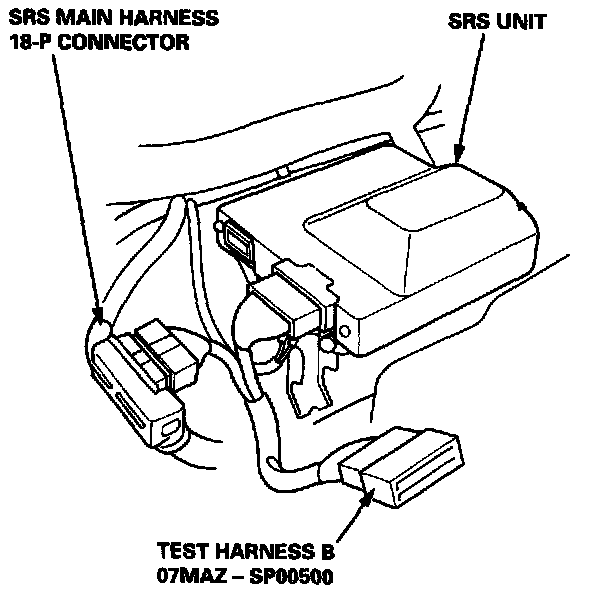
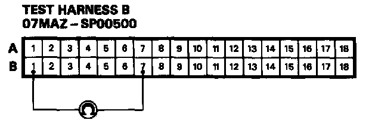
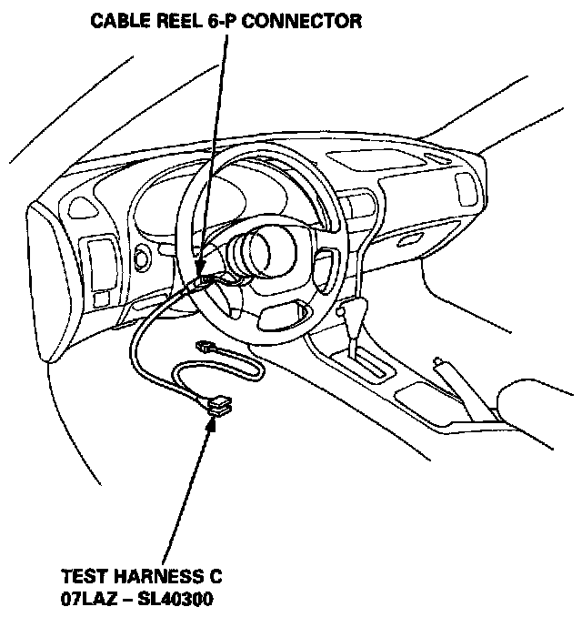
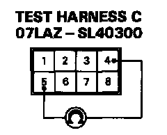
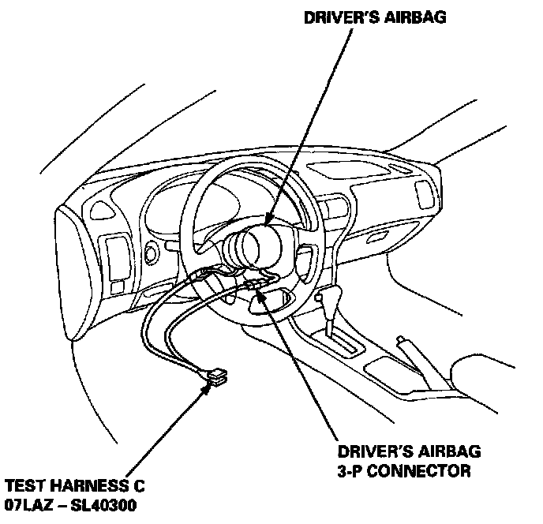
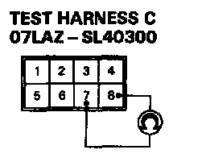

Mode E - Open in Driver's Airbag Inflator or Cable Reel
MODE E - OPEN IN DRIVER'S AIRBAG INFLATOR OR CABLE REELNOTE: The original radio has a coded theft protection circuit. Be sure to get the customer's code number before disconnecting the battery cables.
1. Disconnect the battery negative cable and then the positive cable. Then connect the short connector(s) (RED) to the airbag(s).

2. Connect Test Harness B between the SRS unit and SRS main harness 18-P connector.

3. Reconnect the driver's airbag connector, then measure the resistance between the B1 and the B7 terminals.
- If resistance is more than 0.2 kg, go to step 4.
- If resistance is less than 0.2 K(ohms), the SRS unit is faulty. Substitute a known-good SRS unit and recheck the voltages according to the chart.

4. Disconnect the cable reel 6-P connector from the SRS main harness, then connect Test Harness C only to the cable reel side of the connector.

5. Measure the resistance between the No.4 terminal and the No.5 terminal.
- If resistance is more than 0.2 K(ohms), go to step 6.
- If resistance is less than 0.2 K(ohms), the SRS main harness is faulty. Replace it and recheck the voltages according to the chart. SRS Indicator Light Doesn't Go Off

6. Disconnect the driver's airbag 3-P connector from the cable reel harness, then connect Test Harness C to the driver's airbag 3-P connector.

7. Measure the resistance between the No.7 terminal and the No.8 terminal.
- If resistance is more than 0.2 K(ohms), the driver's airbag inflator is faulty. Replace the airbag assembly and recheck the voltages according to the chart.SRS Indicator Light Doesn't Go Off
- If resistance is less than 0.2 K(ohms), the cable reel is faulty. Replace it and recheck the voltages according to the chart. SRS Indicator Light Doesn't Go Off